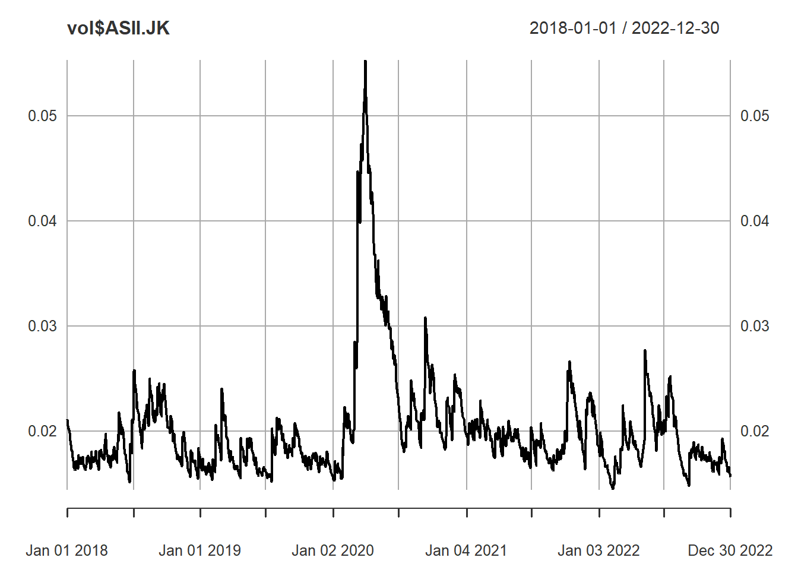
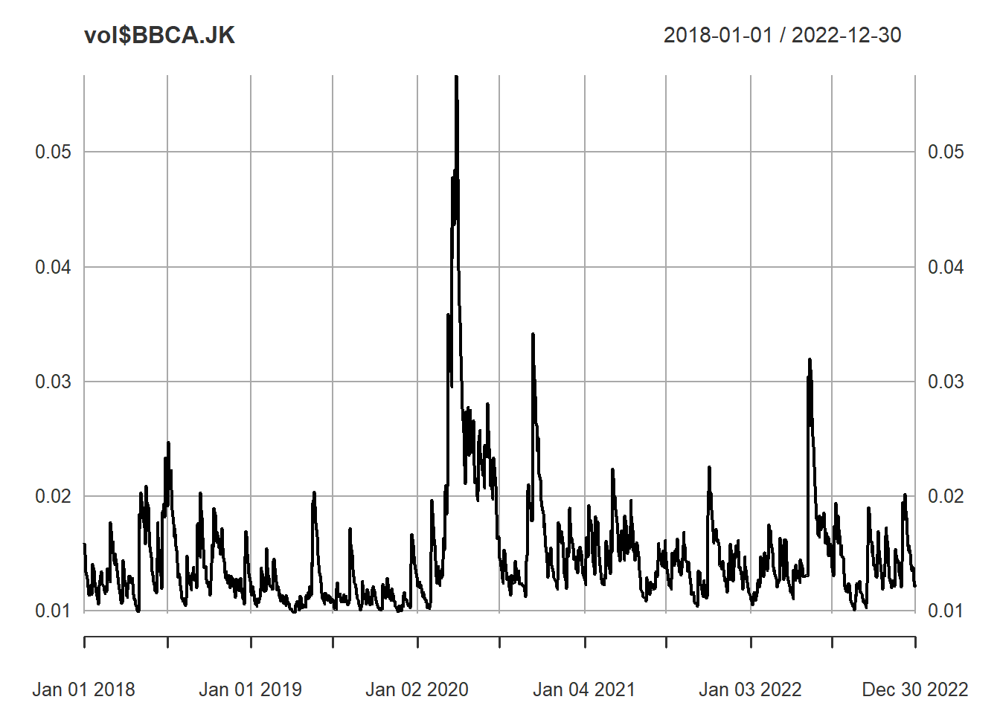
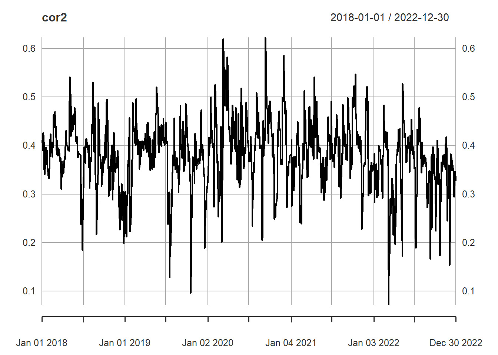

8 Multivariate GARCH
8.1 DCC-GARCH
library(quantmod)
#> Warning: package 'quantmod' was built under R version 4.2.3
#> Loading required package: xts
#> Warning: package 'xts' was built under R version 4.2.3
#> Loading required package: zoo
#> Warning: package 'zoo' was built under R version 4.2.3
#>
#> Attaching package: 'zoo'
#> The following objects are masked from 'package:base':
#>
#> as.Date, as.Date.numeric
#> Loading required package: TTR
#> Warning: package 'TTR' was built under R version 4.2.3
#> Registered S3 method overwritten by 'quantmod':
#> method from
#> as.zoo.data.frame zoo
# Needed Internet Connection !! alike install packages
# Stock Ticker
stocks <- c("ASII.JK","BBCA.JK")
data_list <- lapply(stocks, function(stock) {
getSymbols(stock, src = "yahoo", from = "2018-01-01", to="2022-12-31", auto.assign = FALSE)
})
#> Warning: ASII.JK contains missing values. Some functions
#> will not work if objects contain missing values in the
#> middle of the series. Consider using na.omit(),
#> na.approx(), na.fill(), etc to remove or replace them.
# Daily Return
returns <- lapply(data_list, function(data) {
dailyReturn(Cl(data))
})
#> Warning in to_period(xx, period = on.opts[[period]], ...):
#> missing values removed from data
# Combine data
combined_returns <- do.call(merge, returns)
names(combined_returns) <- stocks
combined_returns <- na.omit(combined_returns)
head(combined_returns)
#> ASII.JK BBCA.JK
#> 2018-01-01 0.000000000 0.000000000
#> 2018-01-02 -0.012048193 0.000000000
#> 2018-01-03 -0.018292683 0.000000000
#> 2018-01-04 0.021739130 0.014840183
#> 2018-01-05 0.009118541 0.001124859
#> 2018-01-08 0.000000000 0.004494382
library(rugarch)
#> Warning: package 'rugarch' was built under R version 4.2.3
#> Loading required package: parallel
#>
#> Attaching package: 'rugarch'
#> The following object is masked from 'package:stats':
#>
#> sigma
library(rmgarch)
#> Warning: package 'rmgarch' was built under R version 4.2.2
#>
#> Attaching package: 'rmgarch'
#> The following objects are masked from 'package:xts':
#>
#> first, last
# GARCH Specification for a Single Asset
unispec <- ugarchspec(mean.model = list(armaOrder = c(0, 0)),
variance.model = list(model = "gjrGARCH",
garchOrder = c(1, 1)),
distribution.model = "norm")
# Determine the number of assets
n_assets <- ncol(combined_returns)
# Replicate GARCH Specification for All Assets
garch_spec <- multispec(replicate(n_assets, unispec))
# DCC Model Specification
dcc_spec <- dccspec(uspec = garch_spec,
dccOrder = c(1, 1),
distribution = "mvnorm")
dcc.fit
#>
#> *---------------------------------*
#> * DCC GARCH Fit *
#> *---------------------------------*
#>
#> Distribution : mvnorm
#> Model : DCC(1,1)
#> No. Parameters : 13
#> [VAR GARCH DCC UncQ] : [0+10+2+1]
#> No. Series : 2
#> No. Obs. : 1253
#> Log-Likelihood : 6804.626
#> Av.Log-Likelihood : 5.43
#>
#> Optimal Parameters
#> -----------------------------------
#> Estimate Std. Error t value Pr(>|t|)
#> [ASII.JK].mu -0.000439 0.000538 -0.81598 0.414511
#> [ASII.JK].omega 0.000013 0.000001 12.73775 0.000000
#> [ASII.JK].alpha1 0.029271 0.009480 3.08769 0.002017
#> [ASII.JK].beta1 0.912942 0.007720 118.25044 0.000000
#> [ASII.JK].gamma1 0.056569 0.023773 2.37951 0.017336
#> [BBCA.JK].mu 0.000635 0.000531 1.19596 0.231713
#> [BBCA.JK].omega 0.000015 0.000008 1.90305 0.057034
#> [BBCA.JK].alpha1 0.053503 0.030193 1.77204 0.076388
#> [BBCA.JK].beta1 0.820666 0.052706 15.57060 0.000000
#> [BBCA.JK].gamma1 0.127614 0.044277 2.88218 0.003949
#> [Joint]dcca1 0.050241 0.033905 1.48184 0.138382
#> [Joint]dccb1 0.766226 0.197975 3.87032 0.000109
#>
#> Information Criteria
#> ---------------------
#>
#> Akaike -10.841
#> Bayes -10.787
#> Shibata -10.841
#> Hannan-Quinn -10.821
#>
#>
#> Elapsed time : 1.267241
# Conditional Covariances
cov <- rcov(dcc.fit)
dim(cov)
#> [1] 2 2 1253
cov[,,1:4]
#> , , 2018-01-01
#>
#> ASII.JK BBCA.JK
#> ASII.JK 0.0004465808 0.0001387231
#> BBCA.JK 0.0001387231 0.0002527424
#>
#> , , 2018-01-02
#>
#> ASII.JK BBCA.JK
#> ASII.JK 0.0004207082 0.0001246004
#> BBCA.JK 0.0001246004 0.0002229686
#>
#> , , 2018-01-03
#>
#> ASII.JK BBCA.JK
#> ASII.JK 0.0004086507 0.0001138079
#> BBCA.JK 0.0001138079 0.0001985342
#>
#> , , 2018-01-04
#>
#> ASII.JK BBCA.JK
#> ASII.JK 0.0004134355 0.0001058398
#> BBCA.JK 0.0001058398 0.0001784818
# Conditional Volatilities
vol <- sigma(dcc.fit)
head(vol)
#> ASII.JK BBCA.JK
#> 2018-01-01 0.02113246 0.01589787
#> 2018-01-02 0.02051117 0.01493213
#> 2018-01-03 0.02021511 0.01409022
#> 2018-01-04 0.02033311 0.01335971
#> 2018-01-05 0.02012066 0.01314336
#> 2018-01-08 0.01962830 0.01254032
plot(vol$ASII.JK)
plot(vol$BBCA.JK)
# Conditional Correlations
cor <- rcor(dcc.fit)
cor[,,1:4]
#> , , 2018-01-01
#>
#> ASII.JK BBCA.JK
#> ASII.JK 1.0000000 0.4129141
#> BBCA.JK 0.4129141 1.0000000
#>
#> , , 2018-01-02
#>
#> ASII.JK BBCA.JK
#> ASII.JK 1.0000000 0.4068245
#> BBCA.JK 0.4068245 1.0000000
#>
#> , , 2018-01-03
#>
#> ASII.JK BBCA.JK
#> ASII.JK 1.0000000 0.3995568
#> BBCA.JK 0.3995568 1.0000000
#>
#> , , 2018-01-04
#>
#> ASII.JK BBCA.JK
#> ASII.JK 1.0000000 0.3896261
#> BBCA.JK 0.3896261 1.0000000
date <- row.names(data.frame(cor[1,1,]))
cor2 <- xts(cor[1, 2, ], order.by = as.Date(date))
plot(cor2)
forecast <- dccforecast(dcc.fit, n.ahead = 5)
forecast@mforecast$H #Cov
#> [[1]]
#> , , 1
#>
#> [,1] [,2]
#> [1,] 2.400993e-04 5.997349e-05
#> [2,] 5.997349e-05 1.426082e-04
#>
#> , , 2
#>
#> [,1] [,2]
#> [1,] 2.460159e-04 6.413043e-05
#> [2,] 6.413043e-05 1.492415e-04
#>
#> , , 3
#>
#> [,1] [,2]
#> [1,] 2.517579e-04 6.792145e-05
#> [2,] 6.792145e-05 1.554634e-04
#>
#> , , 4
#>
#> [,1] [,2]
#> [1,] 2.573305e-04 7.138252e-05
#> [2,] 7.138252e-05 1.612995e-04
#>
#> , , 5
#>
#> [,1] [,2]
#> [1,] 2.627387e-04 7.454746e-05
#> [2,] 7.454746e-05 1.667735e-04
forecast@mforecast$R #Cor
#> [[1]]
#> , , 1
#>
#> [,1] [,2]
#> [1,] 1.0000000 0.3241094
#> [2,] 0.3241094 1.0000000
#>
#> , , 2
#>
#> [,1] [,2]
#> [1,] 1.0000000 0.3346861
#> [2,] 0.3346861 1.0000000
#>
#> , , 3
#>
#> [,1] [,2]
#> [1,] 1.0000000 0.3433217
#> [2,] 0.3433217 1.0000000
#>
#> , , 4
#>
#> [,1] [,2]
#> [1,] 1.0000000 0.3503723
#> [2,] 0.3503723 1.0000000
#>
#> , , 5
#>
#> [,1] [,2]
#> [1,] 1.000000 0.356129
#> [2,] 0.356129 1.000000
forecast@mforecast$mu
#> , , 1
#>
#> [,1] [,2]
#> [1,] -0.0004392956 0.0006354141
#> [2,] -0.0004392956 0.0006354141
#> [3,] -0.0004392956 0.0006354141
#> [4,] -0.0004392956 0.0006354141
#> [5,] -0.0004392956 0.0006354141